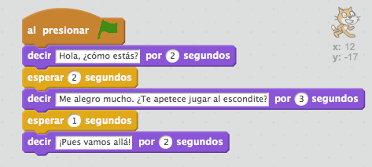
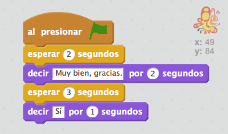
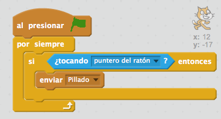
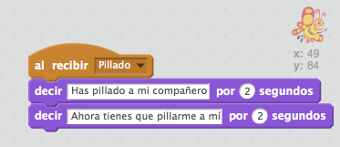
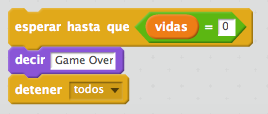
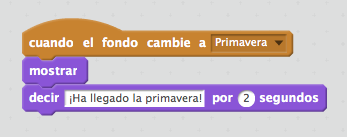

{% trans "Instructions related to synchronization allow our characters to organize things happen in the order we want." %}
{% trans "If you get 0 points..." %}
{% trans "The easiest way to synchronize the behavior of your characters is using a 'wait' block, which makes the character waits the number of seconds you write as a parameter block. An example of how this block can be used to synchronize two characters:" %}


{% trans "In this case it uses blocks 'wait' to synchronize these two characters to maintain a conversation, so that while one speaks, the other character waits, and vice versa. Note that the number of seconds that each character expected, are equal to the number of seconds that the other character speaks, so they never talk at the same time." %}
{% trans "If you get 1 point..." %}
{% trans "Synchronization using blocks 'wait' is very simple when programs are small and have few characters, but when are larger, or when we have several characters, or when conditions to generate a reaction can not be measured previously, it is more efficient to use other modes of synchronization and messages. Here's an example:" %}


{% trans "How do these syncblocks work? When a situation occurs in a character we want to cause a reaction in another character, we can use messaging. In the example, when the mouse touches the cat, the message 'Caught!', which will be sent to all the characters of the project is sent. Thus, when the butterfly receives the message 'Caught!', the instructions on the block 'when receive 'caught!''. Therefore, when the user touches the cat whit the mouse, butterfly says, 'You caught my companion. Now you have to catch me!'." %}
{% trans "If you get 2 points..." %}
{% trans "In addition to sending messages, you can synchronize characters to make things happen in the order we want, using other blocks, such as 'wait until' or 'when the background changes to ...'." %}


{% trans "In the first example, when program execution reaches that point will stop until the condition is met in this case, until life is equal to 0. When lives equal to 0, then continue execution of the remaining blocks, this case, 'said Game Over' and 'stop all', which ends the execution of the project." %}
{% trans "In the second example, the moment when the scene changes to the backdrop with the name 'Spring', the character will execute the blocks placed after the instruction 'when the backdrop changes to Spring', ie to be displayed and will say 'spring has come!'." %}